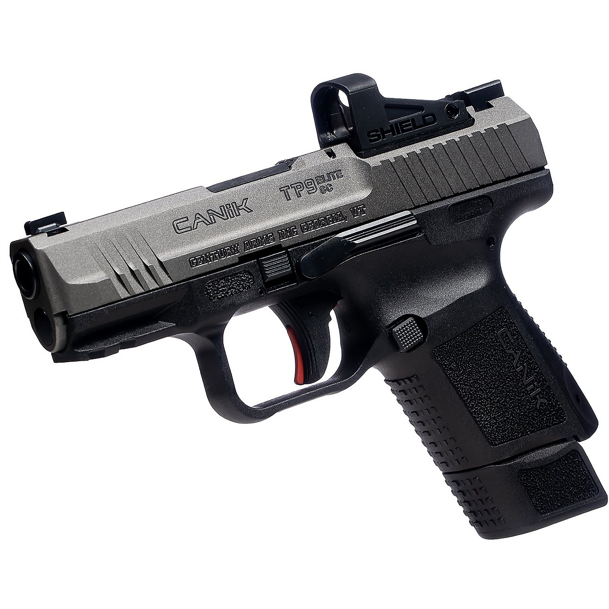
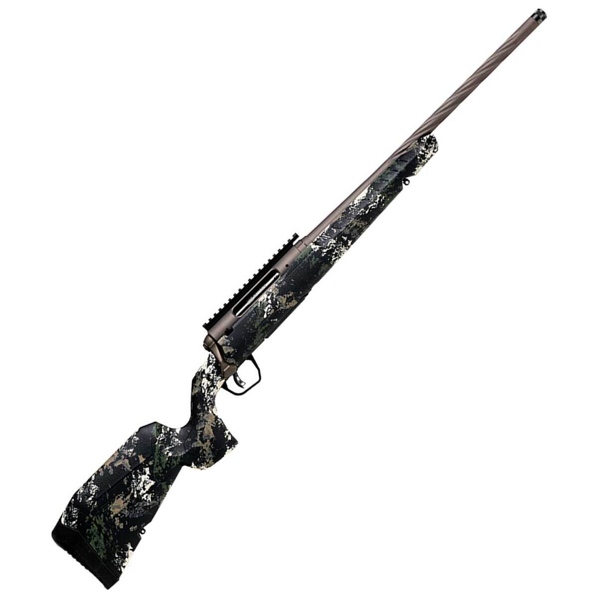

Welcome to Station 314
Fire & Iron Firefighters Motorcycle Club — St. Louis, Missouri Chapter
Fire and Iron Firefighter's MC is made up of firefighters and other people associated with the Fire Service who love to ride and have a good time. Each member is either an Active Full-Time/Career, Paid-On-Call, Sponsored, or Volunteer member of the Fire Service community. In addition to firefighters, we welcome Dispatchers, Inspectors, Mechanics, EMS, and those who work in direct support of the Fire Service. Our members share a passion for protecting the lives of the citizens of their communities — and for the open road.
The Club takes great pride in its efforts to support various charitable organizations, as well as other clubs and rides. Fire and Iron is a Neutral Club, claiming no territory and riding in respect of all other clubs. With over 150 “Stations” across the United States and beyond, our membership logs thousands of miles each year criss-crossing the country in support of one another.
🏆 Gun Raffle Calendar #8 • July 2026 – June 2027
$30 per calendar — win up to 24 times, including the Bonus gun!
All proceeds are donated to the Children's Burn Camp (MidWest Children's Burn Camp), through Denny Dennis Sporting Goods.
See All Winners & Full Calendar »This Month's Drawings — July 2026
Drawings are held on the 2nd & 4th Friday of each month, using the Missouri Friday Mid-Day Lottery drawing.

Canik TP9 Elite SC 9MM

Savage AXIS II Pro Camo .270 Win
Recent Winners
Congratulations to our latest winners! See the full winners list for every drawing, past and present.
| Date | Gun / Prize | Winner |
|---|---|---|
| July 24, 2026 | Savage AXIS II Pro Camo .270 Win | Chuck Kirberg |
| July 10, 2026 | Canik TP9 Elite SC 9mm | James Lee |
| June 26, 2026 — Early Bird | Mossberg Silver Reserve 12GA Shotgun | Ryan Woodson |
How the Raffle Works
How to Enter
$30 per calendar — Venmo only to @James-Vancil. Please include your full name, address, email, and phone number. Questions? Call James at 314-402-5365.
Drawings
2nd & 4th Friday of each month, based on the Missouri Friday Mid-Day Lottery number. Your ticket number stays in for every drawing all year.
Early Bird Bonus
Tickets sold before June 26, 2026 were eligible to win a Mossberg Silver Reserve 12 GA 28″ Barrel Shotgun.
Good to Know
In-store credit is available on some guns, and $200 cash can be accepted in lieu of a gun. All proceeds benefit the Children's Burn Camp.